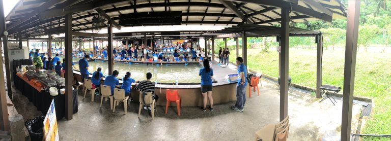
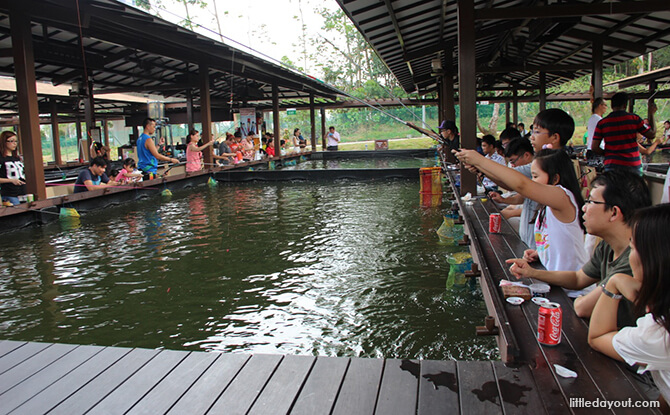
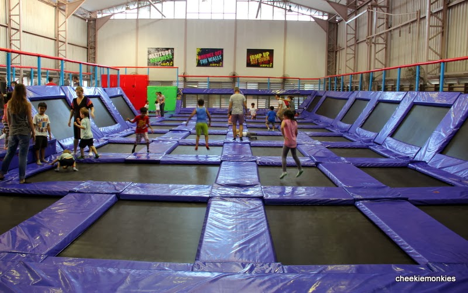
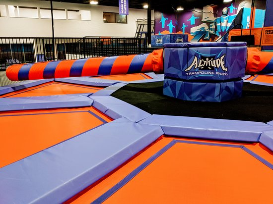
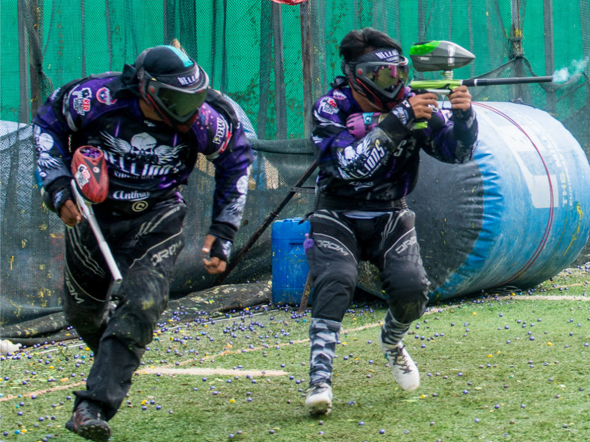
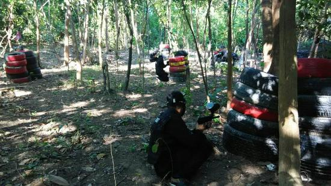
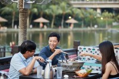

A sanctuary for nature lovers, ORTO is a 555,000 sqft (about the size of 7 football fields) lush greenery located in the northern part of Singapore. It is the country’s first multi-recreational park that is open to the public 24 hours a day, catering to all-day and night activities such as prawning. Formerly called Bottle Tree Park, ORTO has been revamped and refurbished, yet retained its old kampong charms and rustic feel. The cool, scenic and relaxing ambience makes the park a fitting venue not only for family outings, but also for company events and parties.
Overlooking the scenic lake are three spacious and exquisite event venues, all waiting to make your special occasions happen. The Lakehouse, with its countryside wooden ambiance, is perfect for romantic affairs like engagement parties, weddings and valentine events. The Stage is suitable for laid-back family and social gatherings, with its unobstructed view of the lake. The Promenade offers an open-air, flat surface venue that can accommodate bigger groups.
Accessible and conveniently located near Khatib MRT, ORTO offers a quick and easy respite from the city’s hustle and bustle, providing fun and recreational activities that are meant to help you relax, bond with family and friends, and get closer to nature. To complete the experience, a slew of restaurants serves a diverse set of cuisines and dishes, catering to different taste buds and budgets.
ACTIVITIES
Prawning
 
Trampoline Park
 
Paintball
 
DINING AREA
Mookata

Tasty Loong
By Chef Jee
To find out more....
Contact us at
+65 6257 8858
Email: enquiry@orto.sg
Written by Jee Jin De.
Visit us at:
http://orto.sg/
ORTO 81 Lorong Chencharu Singapore 769198
Singapore